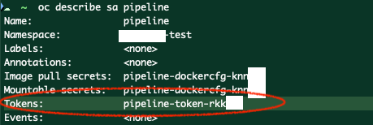

2.配置
1. Dockerfile¶
CMD¶
假设我们用Dockerfile创建了自己的镜像myImg。
CMD 是容器跑起来之后默认会跑的命令，如果docker run中重新定义了命令，那么CMD中的内容会被完全重写，比如：
docker run myImg sleep 10
# 用于创建镜像`myImg`的Dockerfile：
FROM ubuntu
CMD ["sleep", "5"]
sleep 10 会覆盖CMD sleep 5。最终，容器会睡10秒钟。
ENTRYPOINT¶
# 用于创建镜像`myImg`的Dockerfile：
FROM ubuntu
ENTRYPOINT ["sleep"]
ENTRYPOINT会把docker run中的命令，添加到ENTRYPOINT命令的后面。比如：
docker run myImg 10
sleep这个命令来自ENTRYPOINT，而秒数来自docker run中给的参数。最终执行的命令是：
sleep 10
Warning
如果`docker run`中没有给参数，那就会报错
Note
Dockerfile中定义的命令，可以是`shell`格式，或者`json`格式：
- SHELL格式：`CMD sleep 5`
- JSON格式：`CMD ["sleep", "5"]`
以上两者效果是一样的
ENTRYPOINT + CMD¶
ENTRYPOINT的使用感觉更合理，但是当没有给参数时，会报错，要是有个默认值就好了。这时候我们可以同时使用ENTRYPOINT和CMD：
# 用于创建镜像`myImg`的Dockerfile：
FROM ubuntu
ENTRYPOINT ["sleep"]
CMD ["5"]
docker run myImg # 使用默认值参数 5
docker run myImg 10 # 或者自定义参数为 10
使用Dockerfile¶
用最后那个同时用了ENTRYPOINT和CMD的Dockerfile建的镜像来创建Pod：
cd myFolder
ls # 这里应该能看到你写的Dockerfile
docker build -t myImg . # 用当前路径下的Dockerfile建镜像，名字叫`myImg`
docker run myImg --name myPod --entrypoint sleep2.0 myImg 10来创建容器，或者用下面这个YAML文件：（这里我们用了命令的新版本sleep2.0）
# pod.yaml
apiVersion: v1
kind: Pod
metadata:
name: myPod
spec:
containers:
- name: myContainer
image: myImg
command: ["sleep2.0"] # 执行命令
args: ["10"] # 可变参数
| Platform | Example |
|---|---|
| Dockerfile | ENTRYPOINT ['sleep2.0']CMD ['10'] |
| YAML file | -.spec.containers.command: ['sleep2.0']-.spec.containers.args: ['10'] |
docker run |
docker run myPod --image=myImg--entrypoint sleep2.010 |
k run |
k run myPod --image=myImg--command sleep2.0-- 10 |
2. Pod和Deployment¶
Pod¶
Pod在建成之后，除了以下这些属性，其他的内容是无法修改的：
spec.containers[*].imagespec.initContainers[*].imagespec.activeDeadlineSecondsspec.tolerations
如果想要修改已存在的Pod的话，可以这样：
kubectl get pod xxx -o yaml > new-pod.yml
vi new-pod.yml # 然后按照你的要求修改new-pod.yaml
kubectl delete pod xxx
kubectl create -f new-pod.yml
注意
该设计不是最合理的，因为Pod是Deployment生成的产物。如果想要修改Pod的某个参数，那么 更合理的方法 是修改Deployment，然后让Deployment生成新的Pod，而不是直接删除Pod！
Deployment¶
和Pod不同，Deployment可以简单的通过k edit deployment my-deployment修改。
3. 环境变量（env）¶
举例：
apiVersion: v1
kind: Pod
metadata:
name: simple-webapp-color
spec:
containers:
- name: simple-webapp-color
image: simple-webapp-color
port:
- containerPort: 8080
env:
- name: APP_COLOR
value: pink
env）可以由以下三种方法进行配置：
- 纯键值对
- 从
ConfigMap取值 - 从
Secret取值
第一种方法 纯键值对 使用方法如下：（其他两种方法下面会讲到）
env:
- name: APP_COLOR
value: pink
4. ConfigMap¶
ConfigMap的使用¶
使用ConfigMap中所有的键值对：
envFrom:
- configMapRef:
name: app-config # ConfigMap的名字
ConfigMap中的一个或几个值：
env:
- name: APP_COLOR # 环境变量的名字
valueFrom:
configMapKeyRef:
name: app-config # ConfigMap的名字
key: APP_COLOR # ConfigMap中对应的环境变量的名字
记忆点
...From + ...Ref
将ConfigMap作为一个文件写入容器的volume里面。这个操作会在volume里面为每一个键值对建一个文件，以“键”为文件名，“值”为文件内容。（比如有两个文件，APP_COLOR文件内容是APP_COLOR的值，比如"green"，APP_MODE文件内容是"prod"）
spec:
volumes:
- name: app-config-volume # volume 的名字
configMap:
name: app-config # ConfigMap 的名字
ConfigMap的创建¶
以下是创建ConfigMap（缩写为cm）的方法：
用k命令创建¶
# 从纯键值对取值：
kubectl create configmap <configMapName> \
--from-literal=<key1>=<value1> \
--from-literal=<key2>=<value2>
# 或者，从文件取值：
kubectl create configmap <configMapName> \
--from-file=<pathToFile1> \
--from-file=<pathToFile2>
用*.yaml定义¶
# configmap.yml
apiVersion: v1
kind: ConfigMap
metadata:
name: app-config
data:
APP_COLOR: blue
APP_MODE: prod
apiVersion, kind, metadata, spec），这次没有spec了，换成了data！
然后创建所定义的configmap.yml
kubectl create -f configmap.yml
5. Secret¶
Secret的使用¶
Secrets用来存储不应该被暴露的数据，和ConfigMap的唯一区别就是Secrets是加密的。
使用Secret中所有的键值对：
envFrom:
- secretRef:
name: app-secret # 创建的Secret的名字
Secret中的一个或几个值：
env:
- name: DB_Host # 环境变量的名字
valueFrom:
secretKeyRef:
name: app-secret # Secret的名字
key: DB_Host # Secret中对应的环境变量的名字
将Secret作为一个文件写入容器的volume里面：
spec:
volumes:
- name: app-secret-volume # volume的名字
secret:
secretName: app-secret # secret的名字 --> 注意是 secretName 不是 name
Secret的创建¶
用k命令创建¶
# 从纯键值对取值：
# 这里的“generic”是secret的类型，是必须给的值，不然会报错！！我们之后会讲到
kubectl create secret generic <SecretName> --from-literal=<key>=<value>
# 或者，从文件取值：
kubectl create secret generic <SecretName> --from-file=<pathToFile>
用*.yaml定义¶
纯文本版本（不推荐）：
apiVersion: v1
kind: Secret
metadata:
name: app-secret
data:
DB_Host: mysql
DB_User: root
DB_Password: paswrd
base64对信息进行加密：
echo -n 'mysql' | base64
...
data:
DB_Host: bXlzcWw=
DB_User: cm9vdA==
DB_Password: cGFzd3Jk
Secret的加密¶
之前我们将Secret以 base64 格式对数据进行编码。 任何拥有 base64 编码密码的人都可以轻松解码，因此并不是很安全。那为什么说Secret比ConfigMap更安全呢？因为k8s对Secret的处理形式。
Secret文件不上传到版本控制系统（比如git）- 仅当
Pod需要时，才会将Secret发送到该Pod所在的节点 - Kubelet 将
Secret存储到 tmpfs 中，这样Secret就不会写入磁盘存储
tmpfs
**Temporary File System**是类Unix系统上的暂存档存储空间。所有在`tmpfs`上存储的资料在理论上都是暂时借放的，那也表示说，文件不会创建在硬盘上面。一旦重启，所有在`tmpfs`里面的资料都会消失不见。
`tmpfs` 和`RAM disk`的概念近似，但后者会呈现出 *具有完整文件系统* 的虚拟磁盘。
Secret的类型¶
| 类型 | 描述 | 举例 |
|---|---|---|
docker-registry |
给Docker registry用的Secret |
k create secret docker-registry my-secret \ --docker-email=tiger@acme.example \ --docker-username=tiger \ --docker-password=pass1234 \ --docker-server=my-registry.example:5000 |
generic |
从本地文件或者 直接输入生成 Secret（即默认的Opaque类型） |
k create secret generic my-secret \--from-literal=username=prod_user --from-literal=password=top_secret |
tls |
用于存储certificate以及与之相关联的key | k create secret tls my-tls-secret \ --cert=path/to/cert/file \ --key=path/to/key/file |
TLS (Transport Layer Security)
是一种加密协议，用于保护 Internet 上的通信。 它是 SSL（安全套接字层）的继承者，为两台计算机提供了一种安全地相互通信的方式。
6. Docker的安全性（SecurityContext）¶
Process isolation¶
当某个主机/电脑运行Docker时，Docker是以一个单独的进程（process）的形式存在的。你可以通过命令ps aux或者进程监视器（如下图）看到该Docker进程。
ps aux意味着process all user x, x表示任意用户
容器
不同于虚拟机，容器并不是完全与主机本身分离的。容器用了Linux中的命名空间（Namespace）进行分离，主机本身有一个命名空间，容器自己有它的命名空间。所有的容器其实还是在主机上，但是在自己的命名空间中跑。
如图所示：
- 主机（Host）可以看到的Process包括：1，2，3，3.1，3.2
- 容器（Container）可以看到的Process包括：3.1，3.2
Warning
尽管 主机视角 和 容器视角 都能看到3.1（sleep 3000）和3.2（ls）两个进程，他们在两个视角中显示的进程ID是不一样的！这是因为进程在不同的命名空间中可以有不同的进程 ID，这就是 Docker 在系统中 隔离容器 的方式！
安全角度的Users¶
用docker run ubuntu sleep 3600 运行一个容器，当我们用ps aux查看进程时，你会得到如下结果：
# ps aux
USER PID %CPU %MEM VSZ RSS TTY STAT START TIME COMMAND
root 1 0.0 0.0 2788 1116 ? Ss 07:55 0:00 sleep 3600
root 7 0.1 0.0 2888 984 pts/0 Ss 08:39 0:00 /bin/sh
root 13 0.0 0.0 7060 1596 pts/0 R+ 08:39 0:00 ps aux
Linux用户类型
我们可以将Linux中的用户分为两类：
- root用户：也叫 superuser 或者 administrator
- 非root用户：通常，在 Linux 系统上创建的第一个非root用户的 UID 为 1000，第二个用户帐户分配的 UID 为 1001，依此类推。
UID >= 1000的用户都是非root用户
容器root VS 主机root¶
| 特性 | 容器 root 用户 | 主机 root 用户 |
|---|---|---|
| UID | 容器内部的 root UID 通常为 0，但可以映射到主机普通用户。 |
主机 root 的 UID 始终为 0，并对应系统的超级用户权限。 |
| 权限范围 | 默认仅限于容器内部，无法直接操作主机资源。 | 对整个主机系统拥有完全的权限，可修改任何系统资源。 |
| 网络权限 | 网络权限受容器网络命名空间（Network Namespace）限制。 | 拥有对主机网络接口的完全控制权。 |
| 特权模式影响 | 在默认模式下权限有限，但启用 --privileged 会获取主机权限。 |
不受限制，默认拥有所有特权。 |
主机root用户 是Linux系统中最强大的用户，基本什么都能干（具体能干什么的列表在usr/include/linux/capability.h）。而 容器root用户 是设限的，这里列举一些:
| 命令 | 用途 | 主机root用户 | 容器root用户 |
|---|---|---|---|
chown |
授权 | ✓ | ✓ |
dac |
✓ | ✓ | |
kill |
杀死进程 | ✓ | ✓ |
setfcap |
✓ | ✓ | |
setpcap |
✓ | ✓ | |
setgid |
✓ | ✓ | |
setuid |
✓ | ✓ | |
net_bind |
✓ | ✓ | |
net_raw |
✓ | ✓ | |
mac_admin |
✓ | ❌ | |
broadcast |
✓ | ❌ | |
net_admin |
✓ | ❌ | |
sys_admin |
✓ | ❌ | |
sys_chroot |
✓ | ✓ | |
audit_write |
✓ | ✓ | |
| 其他 | ✓ | ❌ |
以上列出的是默认的权限，当然，你也可以手动地给容器的用户添加或者删减权限：
- 增加
- 为容器
ubuntu增加一个MAC_ADMIN的权限：docker run --cap-add MAC_ADMIN ubuntu - 为容器
ubuntu开放所有权限：docker run --privileged ubuntu
- 为容器
- 删减：
docker run --cap-drop KILL ubuntu
修改容器用户¶
如果我们想要使用非root用户运行（因为这样更安全），可以通过以下方式修改：
方法一：创建容器时加上参数--user
docker run --user=1000 ubuntu sleep 3600
方法二：在使用镜像之前，在定义镜像的Dockerfile中修改用户 用ubuntu作为基础镜像，创建一个给自定义镜像的Dockerfile：
FROM ubuntu
USER 1000
my-ubuntu：
docker build -t my-ubuntu .
docker run my-ubuntu sleep 3600
ps aux查看进程时，你会得到如下结果：
# ps aux
USER PID %CPU %MEM VSZ RSS TTY STAT START TIME COMMAND
1000 1 0.0 0.0 2788 1116 ? Ss 07:55 0:00 sleep 3600
7. k8s的安全性（SecurityContext）¶
上一章我们讨论了Docker的安全性。同样的设置在k8s中也有，而且可以选择范畴：
Pod级别的安全配置Container级别的安全配置
我们可以查看当前容器的用户类型：
kubectl exec ubuntu-sleeper -- whoami
使用规则和优先级如下：
Pod的配置会自动应用到在该Pod上的所有Container中Container的安全配置 会覆写所在的Pod上的 的安全配置：Container>Pod
⚠️ 只有Container级别的安全配置才可以添加capabilities（权限）属性。举例：增加某个capabilities：
apiVersion: v1
kind: Pod
metadata:
name: web-pod
spec:
# ---------- Pod级别 ----------
securityContext:
runAsUser: 1000
containers:
- name: ubuntu
image: ubuntu
command: ["sleep", "3600"]
# ---------- Container级别 ----------
securityContext:
runAsUser: 1000
capabilities:
add: ["MAC_ADMIN", "SYS_TIME"]
举例：删除某个capabilities：
...
# ---------- Container级别 ----------
securityContext:
capabilities:
drop: ["MAC_ADMIN", "SYS_TIME"]
Note
如果要用root用户，则直接删除`runAsUser: xxxx`即可！
8. ServiceAccount¶
在k8s中，有两类账号：
- 用户账号（UserAccount）：给人的，包括但不限于Admin，Developer等
-
服务账号（ServiceAccount）：给App的，用于App与k8s的交互。服务账号提供了身份信息，常见的使用案例有：
- 与APIServer的交流
- 与外部服务的交流
- 取得私有的镜像数据库（private image registry）认证
- 第三方软件使用SA来识别Pods
创建ServiceAccount的时候，也会自动创建一个相对应的静态 Token。该令牌会被放在一个 自动生成的Secret对象 中。用以下命令可以看到生成的令牌的名字：
kubectl describe serviceaccount <ServiceAccountName>

动态 Token
也可以为 Kubernetes 服务账户（ServiceAccount）生成短期的身份认证 Token，通常用于 API 访问或其他需要身份验证的场景：
# 为 SA 生成 动态 Token
kubectl create token <ServiceAccountName> \
--duration=10m # 默认 Token 有效期通常为 1 小时
eyJhbGciOiJSUzI1NiIsImtpZCI6Il9oYXZlX3NvbWVfZnVuIn0.eyJpc3MiOiJrdWJlcm5ldGVzL3NlcnZpY2VhY2NvdW50Iiwia3ViZXJuZXRlcy5pby9zZXJ2aWNlYWNjb3VudC9uYW1lc3BhY2UiOiJkZWZhdWx0Iiwia3ViZXJuZXRlcy5pby9zZXJ2aWNlYWNjb3VudC9zZWNyZXQubmFtZSI6ImRlZmF1bHQtdG9rZW4tN3h2cXoiLCJrdWJlcm5ldGVzLmlvL3NlcnZpY2VhY2NvdW50L3NlcnZpY2UtYWNjb3VudC5uYW1lIjoiZGVmYXVsdCIsImt1YmVybmV0ZXMuaW8vc2VydmljZWFjY291bnQvc2VydmljZS1hY2NvdW50LnVpZCI6IjEyMzQ1NiIsInN1YiI6InN5c3RlbTpzZXJ2aWNlYWNjb3VudDpkZWZhdWx0OmRlZmF1bHQifQ.abcdef...
查看Pod的ServiceAccount放在哪里：
k describe pod <PodName>
使用¶
从集群外使用sa¶
令牌被导出到外部应用程序，在向 Kubernetes API 发送请求的时候用该令牌进行身份验证。比如：
curl https://192.168.56.70:6443/api \
-insecure \
--header "Authorization: Bearer eyJhxxB..."
eyJhxxB...即令牌的内容。
从集群内使用sa¶
假如该应用程序运行于集群的某个Pod上，则自动生成的令牌会被写入该Pod的Volume中，无需“导出”。
default sa¶
k8s系统自动为每一个Namespace生成一个名为default的SA，该SA拥有特定的API权限。
在这个 Namespace 中创建的 每个 Pod，如果没有指定其他服务账户，都会自动使用这个 default 服务账户。Kubernetes 会把 default 服务账户关联的认证信息（Token、CA 证书等）自动挂载到 Pod 里的固定路径中:
/var/run/secrets/kubernetes.io/serviceaccount
我们可以用k describe pod xxx查看Volumes 。也可以去看Secret本身：
我们用k exec -it xxx ls /var/run/secrets/kubernetes.io/serviceaccount进到某个Pod的终端，能看到三个文件：
- ca.crt
- namespace
- token: 真正存了令牌的文件，用于访问 Kubernetes API。
叫停默认default sa的挂载¶
我们也可以叫停defaultServiceAccount的自动挂载（可以在 Pod 或者 Deployment 的定义文件中进行修改）：
# ---------------Pod--------------
apiVersion: v1
kind: Pod
metadata:
name: web-pod
spec:
containers:
- name: ubuntu
image: ubuntu
automountServiceAccountToken: false # 叫停`default`ServiceAccount的自动挂载
# ---------------Deployment--------------
.spec.template.spec:
automountServiceAccountToken: false # 叫停`default`ServiceAccount的自动挂载
修改Pod/Deployment使用的sa¶
default ServiceAccount只提供了最基础的 Kubernetes API访问权限，我们可以给Pod添加自定义的ServiceAccount以提供更多其他权限： 删掉旧的Pod，用new-pod.yml新建一个Pod（或者直接修改包含该Pod的Deployment）
# ---------------Pod--------------
apiVersion: v1
kind: Pod
metadata:
name: web-pod
spec:
containers:
- name: ubuntu
image: ubuntu
serviceAccountName: robot # 使用另一个名为`robot`的ServiceAccount
# ---------------Deployment--------------
.spec.template.spec:
serviceAccountName: robot # 使用另一个名为`robot`的ServiceAccount
9. 资源需求（Resource Requirements）¶
Container的资源配置¶
资源的默认值¶
默认情况下，k8s cluster上资源的使用是没有限制的。但我们可以通过LimitRange设置默认值，比如默认一个新Container初始化时至少0.5 CPU和256 Mi的内存（memory）。LimitRange 应用于整个命名空间（Namespace）。举例：
# 默认内存：
apiVersion: v1
kind: LimitRange
metadata:
name: mem-limit-range
spec:
limits:
- default:
memory: 512Mi
defaultRequest:
memory: 256Mi
type: Container
.spec.limits.type的可能值有:Container,Pod,PersistentVolumeClaim
ResourceQuotas vs LimitRange
ResourceQuotas对一个NS中的总资源设限LimitRange对NS中，单个 Pod/Container 使用的资源设限，目的是避免单个 Pod 或容器过度使用资源。
# 默认CPU：
apiVersion: v1
kind: LimitRange
metadata:
name: mem-limit-range
spec:
limits:
- default:
cpu: 1
defaultRequest:
cpu: 0.5
type: Container
Pod资源配置¶
如果你的Container需要更多的资源，你可以在Pod/Deployment的定义文件中修改Container的资源属性，它会覆写 LimitRange 中的默认值。
apiVersion: v1
kind: Pod
metadata:
name: web-pod
spec:
containers:
- name: ubuntu # 资源都是相对Container来说的，不是整一个Pod
image: ubuntu
resources:
requests: # 自定义所需资源的大小
memory: "1Gi"
cpu: 1
limits: # 自定义可用资源上限
memory: "2Gi"
cpu: 2
requests：保证的最少资源数量limits：最大资源数量，Container不可以使用超出该范围的资源！
Warning
如果给某个Container自定义了`requests`，最好也自定义它的`limits`，否则可能报错:<br/> `自定义requests > LimitRange 中默认的limits`
k8s会根据资源需求去找有资源空闲的Node，然后把新Pod放到Node里面：
当Pod对资源的使用超出限制时¶
当某个Container的资源使用超出限制时，k8s会这样处理：
- CPU使用过多：Kubernetes 会限制 CPU，使其不会超出指定的限制。
Container不能使用超过其限制的 CPU 资源。 - Memory使用过多：理论上，
Container可以使用比其限制更多的内存资源。但是，如果一个Pod不断尝试消耗超过其限制的Memory，则该Pod将被终止。
CPU单位
- 浮点数，1CPU=1000m（m=millicpu），最小的CPU可以是1m
- 1 CPU = 1 vCPU，可以是：AWS的1 vCPU；GCP的1Core；Azure的1Core；1 Hyperthred
Memory单位
- 1 G（Gigabyte）= 1,000,000,000 bytes
- 1 M（Megabyte）= 1,000,000 bytes
- 1 K（Kilogabyte）= 1,000 bytes
- 1 Gi（Gibibyte）= 2^30 =1,073,741,824 bytes
- 1 Mi（Mebibyte）= 2^20 = 1,048,576 bytes
- 1 Ki（Kibibyte）= 2^10 = 1,024 bytes
10. Pod和Node的关系¶
如何保证某个
Pod一定会放到某个Node上?
Taints 和 Toleration¶
我要去野营，为了防止虫子随便停在我身上，我需要防虫喷雾。Taints相当于杀虫剂，某个Taint针对虫子A，但是虫子B不怕这种杀虫剂，所以虫子B有Tolerant。所以决定了虫子是否会落到我的身上，有两个因素：
- 我喷的
Taint - 虫子的
Toleration
假设我（人）是个Node，虫子是Pod。Taints 和 Toleration两个概念与安全无关，完全只是限制什么Pod放在什么Node中的一个规则。当完全没有规则定义的时候，k8s的Scheduler对Pod进行平均分配。
Warning
Taint 和Toleration只是为了将某些Pod排除在某个Node之外，它无法保证特殊的Pod一定会放在适合它们的Node上（这个由Node Affinity实现）。因为其他Node可能没有设Taint。
相反，Taint 和Toleration告诉Node只接受具有某些 Toleration 的 pod --> 只保证Node的纯净度
1. 给Node加上Taint：¶
# taint本身其实就是一个键值对，所以 “<key>=<value>” 就够了
kubectl taint nodes <NodeName> <key><operator><value>:<TaintEffect>
# 举例：
kubectl taint nodes node1 app=blue:NoSchedule
OpenShift 也有这个mechanism，但需要adm
oc adm taint nodes node1 app=blue:NoSchedule
其中的TaintEffect 属性决定了如果 Pod 没有对应的 Toleration 会发生什么，从严格到宽松共有3个Effect：
NoExecute：不再接受新的Pod，驱逐有已存在，但并没有Toleration的PodNoSchedule：没有Toleration的Pod不会放在有Taint的Node上PreferNoSchedule：尽量避免，但是不保证
2. 给所属的Pod加上Toleration¶
apiVersion: v1
kind: Pod
metadata:
name: web-pod
spec:
containers:
- name: ubuntu
image: ubuntu
tolerations: # 四个属性，分别对应taint中的 “app=blue:NoSchedule”
- key: app
operator: Equal
value: blue
effect: NoSchedule
Warning
`tolerations`中包含的是一个数组，别忘了这个符号：`-`
Best Practise
一般我们先用--dry-run=client生成*.yaml文件，再在文件中加上tolerations！
Namespace 和 Node
- Namespace是一种将集群逻辑分区为虚拟子集群的方法。--> logical partition, only for conveniency
- Node则是可分可数的物理机或虚拟机。--> physical partition, it REALLY exists
Master Node
还记得k8s的Node有两种类型吗？ Master node其实就比Worker node多了一些管理功能。但是我们发现，Kubernetes的Scheduler从来不往Master Node上面放Pod。
这是因为当k8s的集群被初始化时，Master node上自动加了Taint，用来排除所有Pod（这个设定是可以修改的，但我们一般不修改）。
这个Taint可以这样查看：
k get nodes
k describe node <MasterNodeName> | grep Taint
Note
**Master Node**即名为 "control-plane"的Node，叫法不同而已
节点选择器和节点关联性（Node Selectors & Node Affinity）¶
我们已知Taint和Toleration没有办法保证某个Pod放到有特定资源的Node上去。为了确保某Pod托管在特定Node上，k8s提供了两种机制，让Pod对 Node进行筛选：
- Node Selector
- Node Affinity
两者都以Node的label为基础，在Pod的定义文件中添加删选条件。
kubectl label nodes <NodeName> <labelKey>=<labelValue> # 给Node添加一个标签
kubectl label nodes node01 size=Large # 举例
Warning
k8s中的 `labels` 是区分大小写的！
方法一：Node Selector¶
然后给Pod加上节点选择器：
apiVersion: v1
kind: Pod
metadata:
name: web-pod
spec:
containers:
- name: ubuntu
image: ubuntu
nodeSelector: # 添加 nodeSelector，这里的键值对其实是Node的label
size: Large
- 优点： 简单
- 缺点： 只支持非常简单的逻辑。更复杂的逻辑比如 “
size=Largeorsize=Medium” 是无法通过nodeSelector实现的
方法二： Node Affinity¶
Node Selector没有办法提供not或者or等复杂判断，Node Affinity可以！
apiVersion: v1
kind: Pod
metadata:
name: web-pod
spec:
containers:
- name: ubuntu
image: ubuntu
affinity: # 添加 nodeAffinity
nodeAffinity:
requiredDuringSchedulingIgnoredDuringExecution:
nodeSelectorTerms:
- matchExpressions: # 接下来的内容是个数组
- key: size
operator: In
values:
- Large
- Medium
Info
如果是一个`Deployment`，`affinity`应该放在`.spec.template.spec.affinity`中！
其他可用的 operator:
NotIn：与In相反，不在values中的值Exists：只要存在某个key即满足条件，无论values中包含什么值：# 比如：当Node的label是`size=`的时候，这个时候只有key，没有value，就可以用`Exists` - matchExpressions: - key: size operator: ExistsDoesNotExist：与Exists相反Gt= greater thanLt= less than
Affinity类型
定义了Scheduler在Node Affinity的行为以及 Pod 生命周期中的阶段。
requiredDuringSchedulingIgnoredDuringExecutionpreferredDuringSchedulingIgnoredDuringExecutionrequiredDuringSchedulingRequiredDuringExecution：还在开发中
Pod有两个生命周期
| DuringScheduling | DuringExecution | |
|---|---|---|
| ...指Pod 从不存在到首次创建的状态 | ...指Pod已经在运行了，但可能环境中有新的更改（例如节点标签的更改） | |
requiredDuringSchedulingIgnoredDuringExecution |
Required. | Ignored. 不做任何改变 |
preferredDuringSchedulingIgnoredDuringExecution |
Preferred. 尝试Pod 放在正确的Node上。 如果找不到正确的，就随便找一个Node放。 |
Ignored. 不做任何改变 |
requiredDuringSchedulingRequiredDuringExecution |
Required. | Required. 驱逐/终止Node上不符合规则的Pod。 |
组合拳：Taints Toleration 和 Node Affinity¶
- Taints Toleration： 特殊的
Node上只有特殊的Pod，但不保证特殊的Pod一定能放到特殊的Node上
-> 优先满足Node需求 - Node Affiniity： 特殊的
Pod一定在特殊的Node上，但不保证特殊的Node上只有特殊的Pod
-> 优先满足Pod需求 - Taints Toleration + Node Affiniity组合拳： 特殊的
Node上有且只有特殊的Node
-> 两者需求都满足
小结¶
Node |
Pod |
|
|---|---|---|
| Taint & Toleration | 动词 taint k taint node my-node color=green:NoSchedule |
在Pod的定义文件中添加.spec.tolerations |
| Node Selector | 动词 label k label node my-node color=green |
在Pod的定义文件中添加.spec.nodeSelector |
| Node Affinity | 动词 label k label node my-node color=green |
在Pod的定义文件中添加.spec.affinity.nodeAffinity |
>>> 本章kubectl命令整理¶
Docker命令
docker run <ImageName> --entrypoint <EntryPointCMD> --user=<UserID> 用镜像建一个容器，--user可以是root或者1010等
docker build -t <NewImageName> 用Dockerfile新建一个名为NewImageName的镜像
Docker 用户权限相关
docker run --cap-add MAC_ADMIN <ContainerName> 给容器的用户增加一个权限MAC_ADMIN
docker run --privileged <ContainerName> 给容器的用户所有权限！
docker run --cap-drop MAC_ADMIN <ContainerName> 给容器的用户删减权限MAC_ADMIN
Pod相关
k get pod xxx -o yaml > xxx.yml 查看Pod的更多信息，包括volumes（其中有ServiceAccount），可以导出到yml文件里
- 大多数的Pod属性是不能通过
k edit pod xxx来修改的，如果需要修改，那可以把旧的Pod定义导出成yml文件，删掉旧的Pod，重建新的Pod - 很多需要改的属性可以去改Deployment
k get pod -o wide可以看到Pod跑在哪个Node上，用了哪个IP地址
k describe pod xxx 获取Pod更详细的信息
Node相关
k get nodes
k describe node xxx 关于Node的信息，比如上面跑了什么Pod
Deployment相关
k edit deployment xxx 修改Deployment
ConfigMap相关
k get configmaps 列出所有的configmaps
k describe configmaps/xxx 获取某configmap更详细的信息
k create configmap <configMapName> --from-literal=<key1>=<value1> 用键值对新建configmap（⚠️ 多个键值对使用多个--from-literal=）
k create configmap <configMapName> --from-file=<pathToFile1>用文件新建configmap
Secret相关
k get secrets列出所有的secrets
k describe secret/xxx -o yaml获取某secret更详细的信息
k create secret generic <SecretName> --from-literal=<key>=<value> 用键值对新建secret（⚠️ generic是Secret类型，这个类型属性一定不能少，不然会报错）
k create secret generic <SecretName> --from-file=<pathToFile>用文件新建secret
安全（user）相关
k exec <PodName> -- whoami查看Pod中使用的用户是什么类型（root还是非root）
ServiceAccount相关
k get serviceaccount列出所有的serviceaccount
k create serviceaccount <ServiceAccountName>新建serviceaccount
k describe serviceaccount <ServiceAccountName> 获取某serviceaccount更详细的信息
k create token <ServiceAccountName>为serviceaccount生成token
Taint相关
k taint nodes <NodeName> <key><operator><value>:<TaintEffect> 添加Taint
k taint nodes <NodeName> <key><operator><value>:<TaintEffect>- 删除Taint
- ⚠️ 注意：最后有个➖号，意味着“remove”
- ⚠️ 注意：减号前面没有空格！
k describe node <NodeName> | grep -i Taint 查看Node的Taint
k describe node kubemaster | grep -i Taint 查看Master Node的Taint
Node的Label
k label nodes <NodeName> <labelKey>=<labelValue>给Node加Selector --> 更高级的Node Affinity只能通过改node.yml来添加
DRY RUN
k run xxx --image=yyy --restart=Never --dry-run=client -o yaml > pod.yaml
帮助
k explain pods --recursive | grep envFrom -A3 ⚠️⚠️⚠️ 有用！！！查找envFrom的使用方法。
envFrom <[]Object> # 方括号代表接下来的内容是一个Object的数组
configMapRef <Object> # Object：
name <string> # 字符串类型
optional <boolean> # 布尔类型
Bash
ps aux 查看进程
echo -n 'user' | base64 加密
echo -n 'user' | base64 --decode 解密